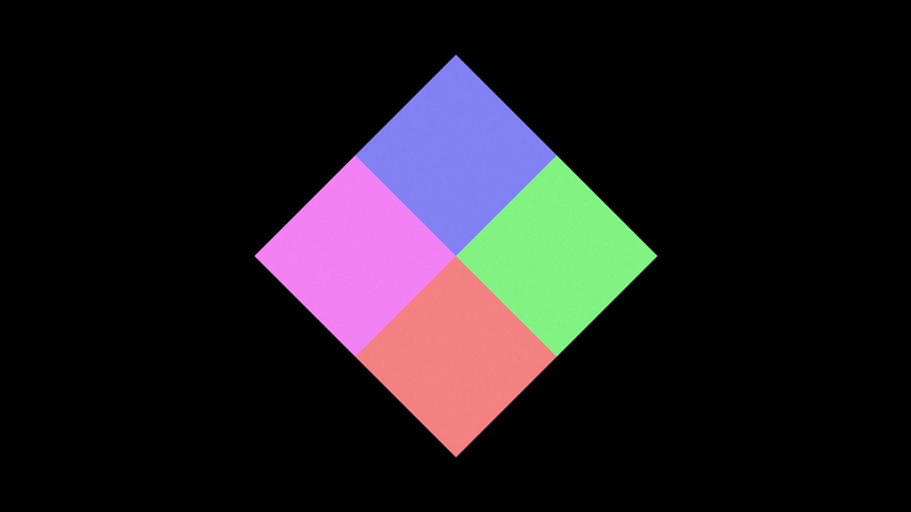

A Swirled Square
This is a quick example to show how to use Fae.jl
Step 1: create a square
First, we should create a square. To do this, we need to set up Fae with the right parameters:
# Physical space location.
bounds = [-4.5 4.5; -8 8]*0.15
# Pixel grid
res = (1080, 1920)
# parameters for initial square
pos = [0.0, 0.0]
rotation = pi/4
scale_x = 1.0
scale_y = 1.0Note that this sets up an image resolution, res, and a separate camera with physical units, bounds, so if we are using a 1920 by 1080 image, the bounds can be anything with a 16:9 ratio. Here, we also set the position, pos, the rotation, and scaling factors in x and y, scale_x and scale_y.
Now we need to define a color. This can be done by passing in an array or tuple (such as color = [1.0, 0, 0, 1] for red), or as an array of arrays or tuples, like:
colors = [[1.0, 0.25, 0.25,1],
[0.25, 1.0, 0.25, 1],
[0.25, 0.25, 1.0, 1],
[1.0, 0.25, 1.0, 1]]
In this case, each row of the array will define the color of a different quadrant of the square. Now we can define our fractal executable...
H = Fae.define_rectangle(pos, rotation, scale_x, scale_y, colors; AT = AT)Here, AT can be either an Array or CuArray depending whether you would like to run the code on the CPU or (CUDA) GPU. num_particles and num_iterations are the number of points we are solving with for the chaos game and the number of iterations for each point. The higher these numbers are, the better resolved our final image will be. Notationally, we are using the variable H to designate a Hutchinson operator, which is the mathematical name for a function set.
Finally, we solve the function system with the fractal_flame(...) function and write it to an image:
pix = Fae.fractal_flame(H, num_particles, num_iterations,
bounds, res; AT = AT, FT = FT)
filename = "out.png"
write_image([pix], filename)
This should provide the following image:

The full code will look like
function main(num_particles, num_iterations, AT; dark = true)
FT = Float32
# Physical space location.
bounds = [-4.5 4.5; -8 8]*0.15
# Pixel grid
res = (1080, 1920)
# parameters for initial square
pos = [0.0, 0.0]
rotation = pi/4
scale_x = 1.0
scale_y = 1.0
if dark
colors = [[1.0, 0.25, 0.25,1],
[0.25, 1.0, 0.25, 1],
[0.25, 0.25, 1.0, 1],
[1.0, 0.25, 1.0, 1]]
else
colors = [[1.0, 0, 0,1],
[0, 1.0, 0, 1],
[0, 0, 1.0, 1],
[1.0, 0, 1.0, 1]]
end
H = Fae.define_rectangle(pos, rotation, scale_x, scale_y, colors; AT = AT)
pix = Fae.fractal_flame(H, num_particles, num_iterations,
bounds, res; AT = AT, FT = FT)
filename = "out.png"
write_image([pix], filename;
img = fill(RGBA(0,0,0,0), size(pix.values)))
end
Step 2: swirl the square
Next, we will try to "swirl the square" by also adding another fractal executable to the mix, the swirl operator (defined already in Fae.jl):
swirl = @fum function swirl(x, y)
r = sqrt(y*y + x*x)
v1 = x*cos(r*r) + y*sin(r*r)
v2 = x*sin(r*r) - y*cos(r*r)
y = v1
x = v2
endHere, we are using the @fum syntax to show how users might define their own operators. The same can be done for colors.
The code here does not change significantly, except that we create a H2 and add it to the fractal_flame(...) function:
...
H2 = Hutchinson([Flames.swirl],
[Fae.Colors.previous],
(1.0,);
final = true, diagnostic = true, AT = AT, name = "2")
pix = Fae.fractal_flame(H1, H2, num_particles, num_iterations,
bounds, res; AT = AT, FT = FT)
...There are a few nuances to point out:
- We are using
Fae.Colors.previous, which simply means that the swirl will use whatever colors were specified inH1. - Fractal operators can be called with
feeorHutchinsonand requireArrayorTupleinputs. final = true, means that this is a post processing operation. In other words,H1creates the object primitive (square), andH2always operates on that square.- We are specifying the Floating Type,
FT, asFloat32, but that is not necessary.
Once this is run, it should provide the following image:

Step 3: a different kind of swirl
Now some people might be scratching their heads at the previous result. If we are solving with both H1 and H2, why does it look like two separate actions instead of one combined one? In other words, why is the swirl so clearly different than the square operation?
This is because we operate on two separate sets of points. H1 creates object primitives. Every step of the simulation, we will read from the points after H1 operates on them. H2 works on a completely different location in memory specifically for image output. If we want, we can make H2 operate on the object, itself, by creating a new fractal executable:
final_H = fee([H, H2])
pix = Fae.fractal_flame(final_H, num_particles, num_iterations,
bounds, res; AT = AT, FT = FT)which will create the following image:

Here, again, is the full code:
function main(num_particles, num_iterations, AT; dark = true)
FT = Float32
# Physical space location.
bounds = [-4.5 4.5; -8 8]*0.15
# Pixel grid
res = (1080, 1920)
# parameters for initial square
pos = [0.0, 0.0]
rotation = pi/4
scale_x = 1.0
scale_y = 1.0
if dark
colors = [[1.0, 0.25, 0.25,1],
[0.25, 1.0, 0.25, 1],
[0.25, 0.25, 1.0, 1],
[1.0, 0.25, 1.0, 1]]
else
colors = [[1.0, 0, 0,1],
[0, 1.0, 0, 1],
[0, 0, 1.0, 1],
[1.0, 0, 1.0, 1]]
end
H = Fae.define_rectangle(pos, rotation, scale_x, scale_y, colors; AT = AT)
H2 = Hutchinson([Flames.swirl],
[Fae.Colors.previous],
(1.0,);
diagnostic = true, AT = AT, name = "2")
final_H = fee([H, H2])
pix = Fae.fractal_flame(final_H, num_particles, num_iterations,
bounds, res; AT = AT, FT = FT)
filename = "out.png"
write_image([pix], filename)
end